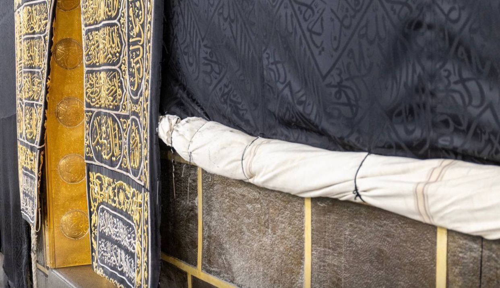

تزامنًا مع قرب موسم الحج
بدء رفع كسوة الكعبة المشرفة يوم غدٍ الخميس، بارتفاع 3 م من أسفل الكعبة المشرفة، ويُغطى الجزء المرفوع بقماش قطني أبيض بعرض ٢.٥م وطول ٥٤م من الجهات الأربع للكعبة المشرفة.
بدء رفع كسوة الكعبة المشرفة يوم غدٍ الخميس، بارتفاع 3 م من أسفل الكعبة المشرفة، ويُغطى الجزء المرفوع بقماش قطني أبيض بعرض ٢.٥م وطول ٥٤م من الجهات الأربع للكعبة المشرفة.